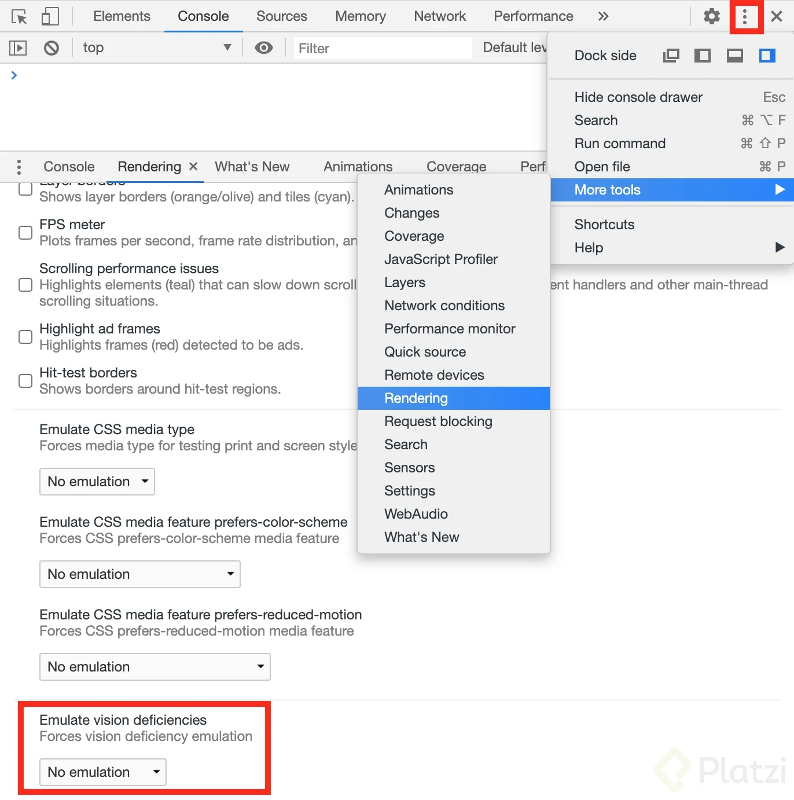

Pruebas automáticas.
Existen herramientas que entregan un resumen de un analisis que se hace a una página web y en base al resumen obtenido se modifican los elementos de la página para hacerlos más accesibles.
Lighthouse.
Esta incluida en las herramientas de desarrollo de Google Chrom. En el inspector de elementos por donde esta la vista de elementos, consola, etc. hay una sección llamada Audits o Lighthouse, dentro de la sección y en la parte titulada Audits o Categories se marca sólo la sección Accessibility y se corre la auditoría.
Pruebas manuales.
Existen herramientas que permiten simular discapacidades visuales con las que se pueden comprobar que tan optima es la accesibilidad de la página y en base a eso se corrigen los detalles que puedan no ser accesibles como colores de alarmas o grosor de textos.
Simuladores de discapacidades visuales.
Existen varias herramientas para simular una discapacidad de visión, una de ellas esta incluida en Google Chrom y se ingresa a ella a través del inspector de elementos, en la parte superior derecha (en perspectiva del usuario) se encuentran tres puntitos en columna que abren un panel de opciones en el cual se encuentra la opción more tools la cual abre otro panel de opciones entre las cuales se encuentra Rendering y esta última abre una sección en el inspector de elementos en la que se puede modificar la visualización de la página web a través del "Emulate Vision Deficiencies".
